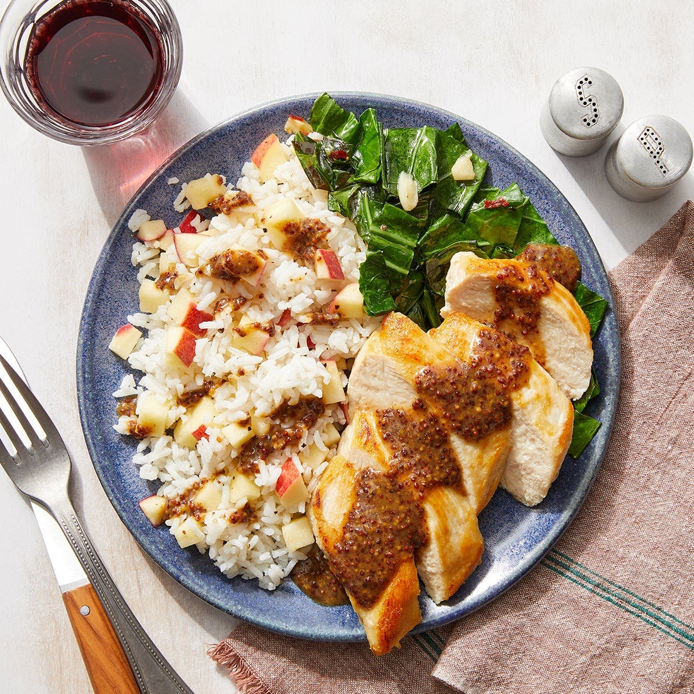

Chicken & Dijon Pan Sauce
with Collard Greens & Apple Rice

Description
Seared chicken topped with pan sauce made with whole grain dijon mustard,
brown sugar, soy sauce, and more. Completed with sides of sweet apple rice
and collard greens sautéed with garlic and a touch of crushed red pepper.
Prep time: 40 minutes
2 servings
630 calories
Ingredients
- 2 boneless, skinless chicken breasts
- ½ cup jasmine rice
- 1 bunch collard greens
- 1 apple
- 2 cloves garlic
- 1 tbsp light brown sugar
- 1 tbsp soy sauce
- 1 tbsp apple cider vinegar
- 2 tbsp whole grain dijon mustard
- 2 tbsp crème fraîche
- ¼ tsp crushed red pepper
Steps
- Prepare the ingredients and start the sauce:
- Wash and dry all the fresh produce.
-
Separate the collard green leaves from the stems;
discard the stems, then roughly chop the leaves.
- Peel and roughly chop 2 cloves of garlic.
-
Core and small dice the apple. Place in a bowl; add
half the vinegar and season with salt and pepper.
Stir to combine. Set aside to marinate, stirring occasionally.
-
In a separate bowl, combine the
soy sauce, mustard, sugar, remaining vinegar, and 1/4 cup of
water.
- Cook the rice:
-
In a small pot, combine the
rice, a pinch of salt, and 1 cup of water.
- Heat to boiling on high. Once boiling, reduce the heat to low.
-
Cover and cook the rice, without stirring, 12 to 14 minutes, or until
the water has been absorbed and the rice is tender.
- Turn off the heat and fluff with a fork. Cover to keep warm.
- Cook the collard greens:
-
In a medium pan, heat 1 teaspoon of olive oil on
medium-high until hot. Add the
chopped collard greens. Cook, stirring occasionally,
1 to 2 minutes, or until slightly wilted.
-
Add the chopped garlic; season with salt and pepper.
Add as much of the red pepper flakes as you like.
Cook, stirring occasionally, 1 to 2 minutes, or until slightly
softened.
-
Add 1/4 cup of water. Cook, stirring occasionally, 2
to 3 minutes, until the collard greens are wilted and the water has
cooked off.
-
Transfer to a bowl. Taste, then season with salt and pepper if
desired. Cover with foil to keep warm.
- Wipe out the pan.
- Cook the chicken:
-
Pat the chicken dry with paper towels. In the same pan, heat
1 teaspoon of olive oil on medium-high until hot.
-
Add the chicken. Cook 6 to 7 minutes per side, or until browned and
cooked through.
-
Leaving any browned bits (or fond) in the pan, transfer the cooked
chicken to a plate.
- Finish the sauce:
-
To the pan of reserved fond, add the
sauce made in Step 1. Cook on medium-high 2 or 3
minutes or until slightly thickened, stirring frequently and scraping
up any fond.
-
Turn off the heat. Stir in the crème fraîche. Taste,
season with salt and pepper as desired.
- Finish the rice and serve your dish:
-
To the pot of cooked rice, add the
marinated apple (including any liquid); season with
salt and pepper. Stir to combine.
-
Serve the chicken with the finished rice and cooked collard greens.
Top the chicken and rice with the finished sauce. Enjoy!
Home page